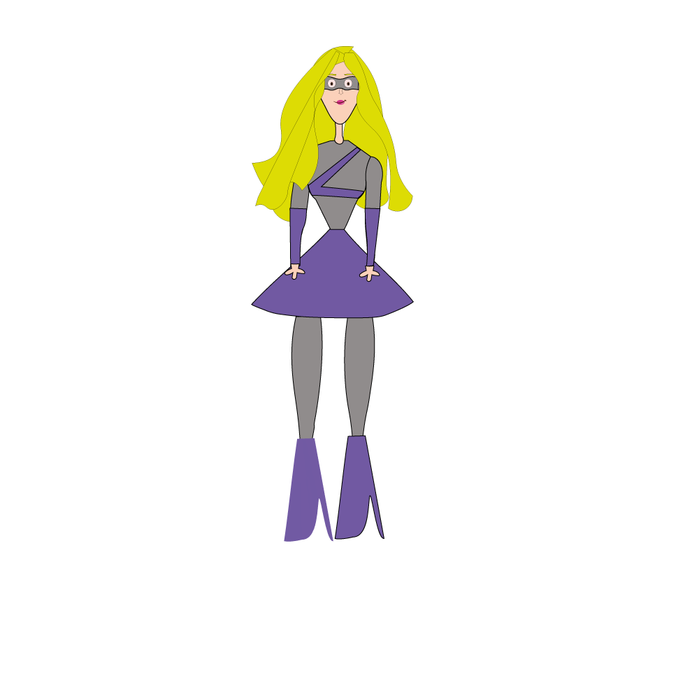

Born and raised in Williamsburg, Lumin grew up surrounded by the energy and diversity of NYC. With her tall figure, blonde hair and signature purple tutu, she stands out as a symbol of both fashion and strength. Living with her doctor parents, Lumin balances her love for design with her mission to help others.
